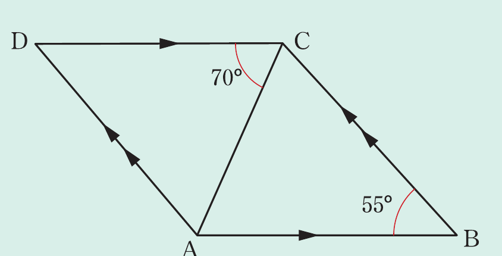

Example 2.8
In the following figure, prove that

Solution
Given a parallelogram ABCD where AC, is its diagonal.
Required to prove that,
Proof: In and it follows that,
(alternate interior angles as ).
Similarly,
(alternate interior angles as ).
is a common side.
Therefore, (by AAS).